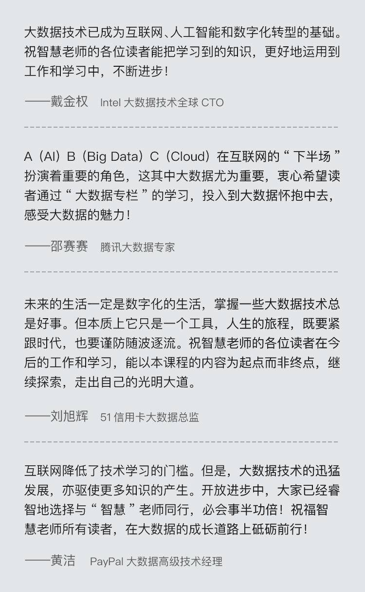

- 00 开篇词 为什么说每个软件工程师都应该懂大数据技术？.md
- 01 大数据技术发展史：大数据的前世今生.md
- 02 大数据应用发展史：从搜索引擎到人工智能.md
- 03 大数据应用领域：数据驱动一切.md
- 04 移动计算比移动数据更划算.md
- 05 从RAID看垂直伸缩到水平伸缩的演化.md
- 06 新技术层出不穷，HDFS依然是存储的王者.md
- 07 为什么说MapReduce既是编程模型又是计算框架？.md
- 08 MapReduce如何让数据完成一次旅行？.md
- 09 为什么我们管Yarn叫作资源调度框架？.md
- 10 模块答疑：我们能从Hadoop学到什么？.md
- 11 Hive是如何让MapReduce实现SQL操作的？.md
- 12 我们并没有觉得MapReduce速度慢，直到Spark出现.md
- 13 同样的本质，为何Spark可以更高效？.md
- 14 BigTable的开源实现：HBase.md
- 15 流式计算的代表：Storm、Flink、Spark Streaming.md
- 16 ZooKeeper是如何保证数据一致性的？.md
- 17 模块答疑：这么多技术，到底都能用在什么场景里？.md
- 18 如何自己开发一个大数据SQL引擎？.md
- 19 Spark的性能优化案例分析（上）.md
- 20 Spark的性能优化案例分析（下）.md
- 21 从阿里内部产品看海量数据处理系统的设计（上）：Doris的立项.md
- 22 从阿里内部产品看海量数据处理系统的设计（下）：架构与创新.md
- 23 大数据基准测试可以带来什么好处？.md
- 24 从大数据性能测试工具Dew看如何快速开发大数据系统.md
- 25 模块答疑：我能从大厂的大数据开发实践中学到什么？.md
- 26 互联网产品 + 大数据产品 = 大数据平台.md
- 27 大数据从哪里来？.md
- 28 知名大厂如何搭建大数据平台？.md
- 29 盘点可供中小企业参考的商业大数据平台.md
- 30 当大数据遇上物联网.md
- 31 模块答疑：为什么大数据平台至关重要？.md
- 32 互联网运营数据指标与可视化监控.md
- 33 一个电商网站订单下降的数据分析案例.md
- 34 A_B测试与灰度发布必知必会.md
- 35 如何利用大数据成为“增长黑客”？.md
- 36 模块答疑：为什么说数据驱动运营？.md
- 37 如何对数据进行分类和预测？.md
- 38 如何发掘数据之间的关系？.md
- 39 如何预测用户的喜好？.md
- 40 机器学习的数学原理是什么？.md
- 41 从感知机到神经网络算法.md
- 42 模块答疑：软件工程师如何进入人工智能领域？.md
- 所有的不确定都是机会——智慧写给你的新年寄语.md
- 第2季回归丨大数据之后，让我们回归后端.md
- 结束语 未来的你，有无限可能.md
结束语 未来的你，有无限可能
你好，我是李智慧。我的专栏《从0开始学大数据》到今天就全部结束了，42期专栏，我们一起走过3个月的时间，系统学习了Hadoop大数据系统的原理与架构；Hive、Spark、HBase等大数据生态下主要产品的原理和应用；学习了自己开发一个大数据SQL引擎的思路与方法，以及Spark源代码性能测试与优化等大数据开发实践；一起走进大数据技术背后的应用，也领略了大数据算法的魅力。
通过学习这个专栏，希望你可以建立起大数据完整的知识图谱，了解大数据核心原理和关键细节，构建起自己的大数据思维框架，并在实践中进一步学习和思考，逐步将各种大数据知识融会贯通。如果你已经在从事大数据应用，希望专栏可以帮你把握住大数据的关键，做到掌控自己的项目，毕竟大数据和机器学习只是你所用的工具和手段。但是如果你想学习更多的细节，成为大数据领域的高手，那么还必须要付出非常多的努力深入研究，这个专栏仅仅是入门而已。
2018年9月，当我接受极客时间的邀请，准备写专栏“开篇词”的时候，上海正笼罩在秋初最后的酷热之中。现在我在写专栏“结束语”的时候，窗外的寒风正从北京城呼啸而过。秋去冬来而冬又将去，亲爱的同学们，感谢你们陪我走过人生的又一个秋冬，我们一起学习、讨论、交流、碰撞，让时间不只是日历上的数字，让时光因为经历而更加厚重，而这些经历又会给我们的未来增添更多的可能。蝴蝶扇动了它的翅膀，各种可能性都已开启，未来正等待你我去揭开它的面纱。
未来是现在的未来，现在是过去的未来。过去20年，中国人均GDP大约增长了10倍，从跟刚果差不多的水平，发展到和俄罗斯一样的水平。再过20年，大约发展到西班牙的水平，进入中等发达国家行列。大象正在飞奔，似乎没有什么能够阻挡它前进的脚步，而我们身在大象的背上，似乎也没有理由不跟它一起奔驰。
但是前进从来都不是一件容易的事，克服自己的惰性和怯懦，超越竞争者的阻截和非难，开创从前未曾到达的新领域，每一件事情都困难重重，每一刻都有一千个理由去放弃。但是我们知道，我们不会放弃，因为过去也一样困难重重，我们一直没有放弃，今天，我们也依然不会放弃。
未来并不容易，我们唯有加倍努力，努力让所有的流过的汗水都变成盛开的玫瑰，努力让所有的梦想都能成真，努力让自己变成更强大的自己。亲爱的同学们，伴随着除夕的鞭炮声，在农历新年零点钟声敲响之际，我祝你心想事成、鹏程万里，也祝你锐意进取、努力拼搏；我祝你事业顺利、学业有成，也祝你永远年轻、热血沸腾！
春节已经来临，春天即将到来，未来与你都有无限可能！
各位同学新年好，我是“大数据”专栏编辑Shawn，恭喜你完成了专栏的学习。下面是几位大数据领域的资深专家为你发来的寄语。专栏为你打开了一扇大门，门里的世界仍需努力去探索，智慧老师也会一直在这里为你答疑解惑，也愿你可以勇往直前，拥抱未来无限的可能。

© 2019 - 2023 Liangliang Lee. Powered by gin and hexo-theme-book.